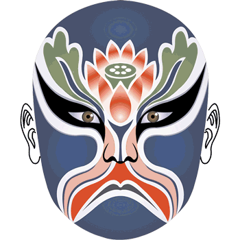
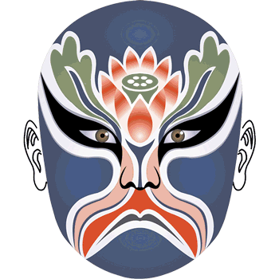
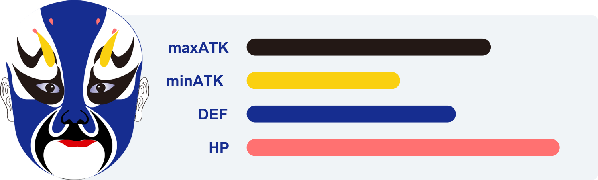

How tough is my warrior ?
First of all, all warriors are brave enough and qualified to fight in the ancient arena. Each warrior has 4 basic combat attributes——minATK, maxATK, DEF, HP. The points of each attribute are determined by which elements your warrior is made up of.
These attributes are vital when they fight in the arena, and they’ll be even more important for breeding new warriors.
Beware, 108 famous heroes active throughout ancient Chinese history will be hidden among all 10,000 warriors. These heroes will be more powerful in the battle. If you’re lucky enough to get one, make sure you hold on to it, and make the most advantage of it.
These attributes are vital when they fight in the arena, and they’ll be even more important for breeding new warriors.
Beware, 108 famous heroes active throughout ancient Chinese history will be hidden among all 10,000 warriors. These heroes will be more powerful in the battle. If you’re lucky enough to get one, make sure you hold on to it, and make the most advantage of it.
